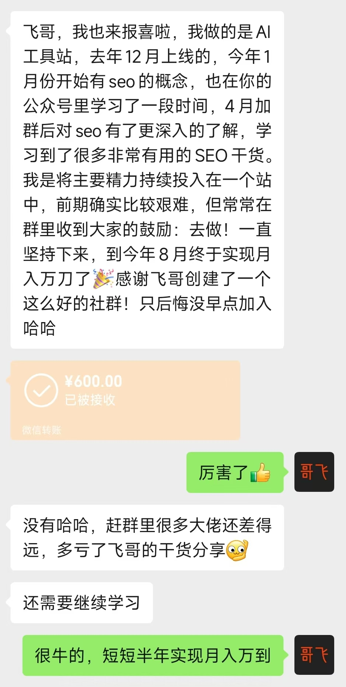
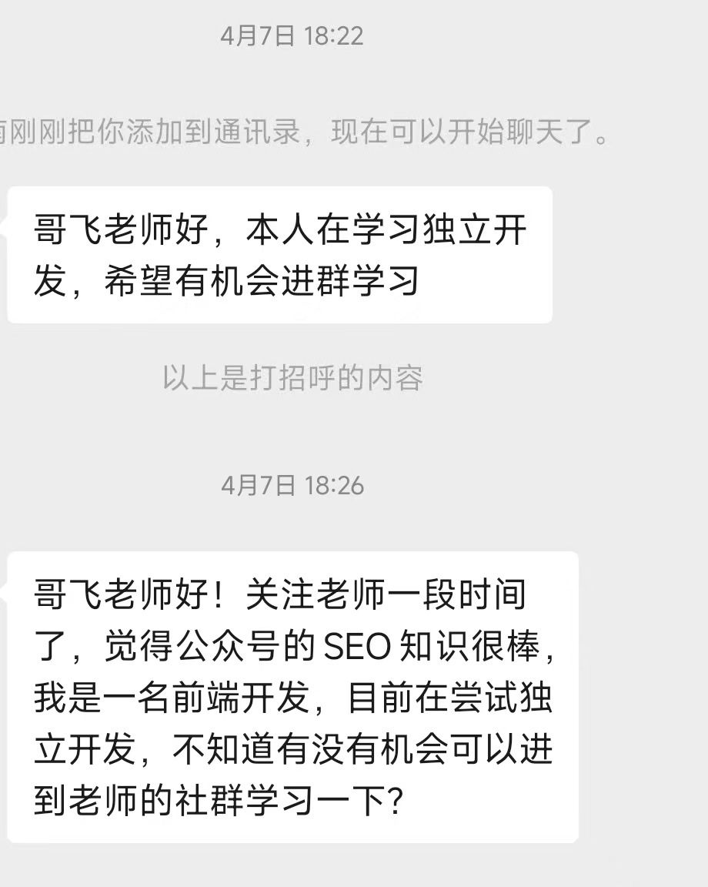

一位前端开发 4 月进群，8 月靠一个 AI 工具站做到月入万刀。哥飞借这个案例说明：月入万刀的关键词并不稀缺，真正稀缺的是持续投入和迭代的能力——网站做废了，就换个域名、带着经验重来。
半年做出月入万刀，靠的是一个站
这位群友去年 12 月上线 AI 工具站，1 月接触 SEO，4 月进群后把主要精力持续投入在这一个站上，8 月实现月入万刀。哥飞的点在于：他进群时的介绍是前端开发、正在尝试独立开发，此前并没有成功经验。


万刀拆开算，门槛没有想象中高
月入万刀按 30 天算，一天 330 刀；客单价 20 刀，大约 17 个订单；按千分之五的付费转化率，需要 3400 个点击；即使只拿到三分之一的点击，找到每天一万次搜索的词就够了。换算成月均搜索量 30 万的关键词，这样的词有几千上万个。
所以没有必要去探究别人做的是什么关键词。
找不到词，往往是限制条件太多
初学者多加点限制条件、找竞争更低的词，是为了更容易拿到正反馈；但这不代表其他词不能做。只要有搜索量的词都可以做，区别只是不同竞争度需要投入的资源不一样。能持续半年投一个网站，任何词都能做。
但不要永远把自己当初学者。换个思路：找那些有付费转化的词，尽一切办法去搞流量，长期收益更高。
初学者有两条路
- 找低竞争词，多上站积累经验，之后去做竞争更高的词。
- 直奔高转化的词，多上站积累经验；每次踩坑就换个域名重新来，但方向不变。
失败的定义：域名废了，方向没错
比如批量上页面引来搜索引擎惩罚，域名救不回来，这个域名就失败了；再比如买了垃圾外链又被惩罚。但这不代表选的方向错了。最好的选择是注册新域名，用已经实现好的功能改改文案，再上一个新站，并且避开上次踩过的坑。
这就像网文里的重生流：开局死掉、带着记忆回到出生点，提前规划、避免踩坑，每一次重生都走得更远。做站也一样，每次失败就相当于重生一次，换个域名从零开始，基于之前的经验一定越做越好。
迭代的是经验，不是重复劳动
经验、操作手法、外链资源、落地页、转化路径都在迭代，持续下去自然越来越强。但有些人用同样的经验去做十几个网站，这没有用——运气不会青睐敷衍的人，只会加持有实力的人。
原始对话
聊天记录（16 条）
参与者 1 人：哥飞 · 时间范围 2025年11月14日 18:06 至 2025年11月14日 19:09 · 原始 16 条，保留 16 条
哥哥飞2025年11月14日 18:06
[图片] 微信图片_202511141806_1.jpg
哥哥飞2025年11月14日 18:07
大家来感受一下这位群友的实力，4月进群后，8月就实现了月入万刀。
哥哥飞2025年11月14日 18:12
[图片] 微信图片_202511141812_2.jpg
哥哥飞2025年11月14日 18:16
从4月他的介绍可以看到，他是前端开发，有编程基础，正在尝试做独立开发，说明之前并没有成功经验，的确是通过他全力以赴做的这个网站，实现了蜕变，搞到了流量，搞到了钱。
哥哥飞2025年11月14日 18:22
很多关键词都能够实现月入万刀。
大家别以为万刀很多，平均30天计算，一天330刀，平均客单价20刀，大概需要17个订单。
再按照千分之五付费转化率计算，需要3400个点击。
就算你拿到三分之一的点击，那么找到一些每天有1万次搜索的关键词就可以了。
也就是月均搜索量30万，这样的关键词，有几千上万个。
哥哥飞2025年11月14日 18:25
很多朋友说自己找不到关键词，其实是因为限制条件太多了。
初学者，可以把限制条件加多一些，找到一些可能更低竞争的词，更容易拿到正反馈。
但不代表其他词你就不能做了，只要有搜索量的词，都可以去做。
无非就是不同竞争度的词，需要投入的资源不一样。
你如果能够持续半年投入资源去做一个网站，那么任何词，都可以做。
哥哥飞2025年11月14日 18:27
不要永远把自己当作初学者，不要时刻都想着找低竞争的关键词。
哥哥飞2025年11月14日 18:28
换个思路，找那些有付费转化的词，然后尽一切办法去搞流量，从长期来看，收益更高。
哥哥飞2025年11月14日 18:29
但在这个过程中，肯定会踩坑，做错一些事情。
甚至有时候老手都会做错一些事情，这时候怎么办呢？
代码都写好了，当然是换个域名重新来过。
哥哥飞2025年11月14日 18:31
所以，其实初学者有两条路可选：
1. 找低竞争词，多上站，积累经验，之后去做更高竞争的词；
2. 直奔高转化的词，多上站，积累经验，每次踩坑了就换个域名重新来，但方向不变。
哥哥飞2025年11月14日 18:36
现在网文流行一种类型，以《苟在初圣魔门当人材》为代表，开局就重生成，然后快速因为某些原因死掉，发现居然能够带着记忆重生回到出生点，于是之前遇到的一些事情就可以提前规划好应对办法，避免再次踩坑。
结果就是每一次重生之后，都能够走得更远。
我们现在做网站也是一样的，我上面说的第2条路，其实就相当于你每次做失败了一个网站，就重生一次，然后换个域名从零开始继续，基于你之前的经验积累，你肯定能够做得越来越好。
哥哥飞2025年11月14日 18:38
经验在迭代，你的操作手法在迭代，外链资源在迭代，网站落地页在迭代，网站转化路径在迭代，这样持续迭代下去，你肯定会越来越强的。
哥哥飞2025年11月14日 18:41
所以不要害怕失败，要把失败当作是通往成功的阶梯。
上面我们说到了迭代，但其实我知道有些人可能不怎么愿意思考，同样的经验去做十几个网站，这样是没用的。
你想碰运气，可是运气并不会青睐敷衍的人。
运气只会加持那些有实力的人。
哥哥飞2025年11月14日 19:07
解释一下上面说的失败。
当你选定一个关键词之后，基于这个关键词背后的需求去做了一个网站来满足这个需求。
此时，可能因为你对于SEO的认知和经验不够，导致有一些错误的操作，如你批量做了很多页面，引来了搜索引擎的惩罚，这时候，你这个域名就废了。
你想要再去把这个域名救回来是很难的，此时我就认为这个域名失败了。
但并不代表你选择的方向错误了，所以你此时最好的选择是，注册一个新域名，用这套代码已经实现好的功能，改改文案，再上一个新网站。
然后继续去做，这时你已经知道不能批量上页面了，但是可能因为别的原因又踩坑了，如可能去买了不好的链接，又被搜索引擎惩罚了。
此时，你又注册了一个域名，还是这套代码，还是这个关键词，再改好文案，上线一个新的网站，这次你肯定不会继续批量上页面，也不会买那个垃圾外链了，你的网站开始有流量了。
这，就是我说的，失败之后，回到出生点，带着之前的记忆，换个域名重新来过。